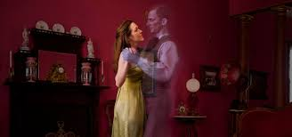

Erotic Delusion
Erotic Delusion, also known as Erotomania, is a uncommon mental disorder that happens when someone is highly fixated on the idea that another person is intensely in love with them.
Causes of Erotic Delusion
Although the precise origin of erotic delusion is unknown, certain components could leading the problems:
- Mental Health Disorders:
Dementia is one of the possible causes of erotic delusion. It is a disorder that hinder the memory and judgment. This could leading to erotic delusional beliefs. - Neurological factors:
Some studies point out that the changes in brain structure or chemistry possibly contributing to the emergence of erotic delusion. - Environmental factors:
Stressful life events like trauma or loss could set some people off in an erotic dream. - Substance abuse:
people who use drugs or alcohol are more likely to develop Erotic delusions. While alcohol impairs one's capacity for clear and logical thought, certain drugs can alter brain chemistry and result in delusions. - Social isolation:
Those who lack close relationships or are socially isolated could be more prone to have erotic delusion by not sharing themselves to others.

Signs and Symptoms of Erotic Delusion
- Constantly sending letters, emails, or gifts to the other person
- Being convinced that the other person is trying to secretly communicate through glances, gestures, or coded messages
- Creating elaborate but false situations in which the other person is pursuing them, stalking them, or trying to get in touch with them
- Harassing the other person in public
- Losing interest in activities other than talking about the other person or doing activities related to them